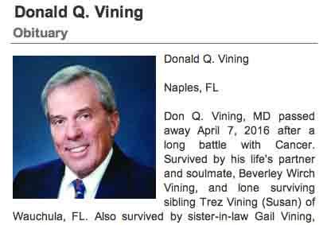

Census Data
| 1930 | 1940 | |
| Edward Clyde Vining | 30 | 41 |
| Pearl Mae (Edwards) Vining | 24 | 35 |
| Edward Clyde Vining Jr. | 2 y., [3?] m. | 12 |
| Bruce Vining | 9 | |
| Donald Q. Vining | 2 | |
| Trez Vining |


Death Data
Obituary for Don Q. Vining, son of E. Clyde Vining and Pearl Mae (Edwards) Vining: